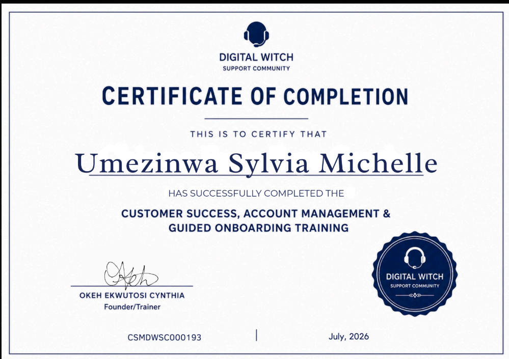
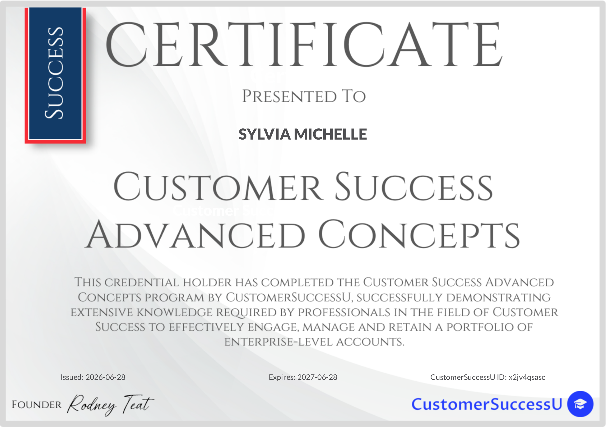
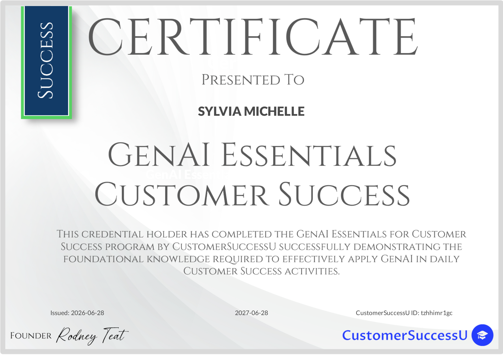
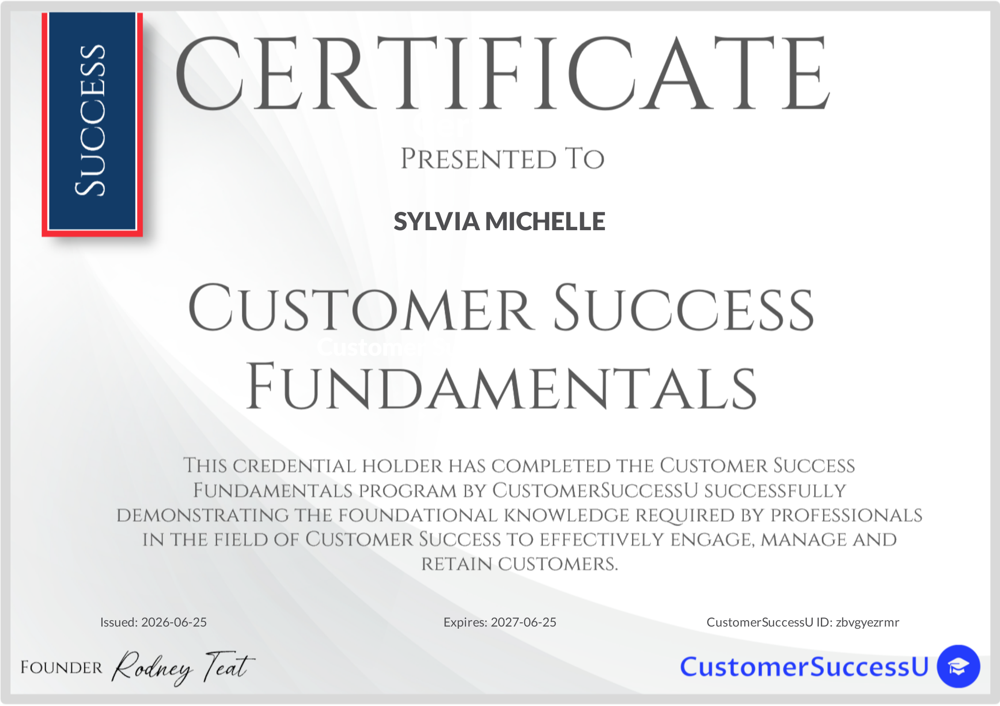

I translate customer behavior into decisions your leadership can act on — for the client, and for the business. Certified Customer Success Manager, open to remote and global CS roles.
I'm a customer success and communications professional based in Lagos, with a background that spans customer success, PR & communications, email marketing, and executive administrative support. I hold a B.Sc. in Agriculture & Animal Science — a systems-thinking foundation that still shows up in how I read customer health: as signals, feedback loops, and root causes, not just red/yellow/green tickets.
I'm a certified Customer Success Manager, with additional certifications in customer success, AI tools, and digital marketing from ALX Africa, CustomerSuccessU, Digital Witch, and TechBridge. I bring in-depth familiarity with regulatory bodies, Oracle Siebel CRM, and process improvement methodologies from my current telecom context.
"I am your trusted partner first — before any other thing."
Relationship building isn't about becoming a customer's friend. It's understanding their business well enough to know what they actually need to hear — and tying every interaction back to why I'm there: to deliver value for their business, and for the product I represent.
That relationship runs in two directions. Externally, it's trust with the customer. Internally, it's translation — turning customer behavior into language product teams and leadership can act on. Reporting a number is easy. Speaking the language your executives need to hear is the harder, rarer half of the job.
Built and maintain a cross-platform tracking system spanning X, LinkedIn, Facebook, and Instagram, feeding a weekly Social Sentiment Report that categorizes customer chatter into promoter, passive, and detractor segments with root-cause tagging — service downtime, delayed installation, resubscription issues — and actionable next steps for leadership.
Rather than waiting for escalations, I monitor public posts for service complaints and reach out directly — collecting details, coordinating engineers and back-office teams, and closing the loop with the customer. Several public complaints resolved this way turned into unsolicited follow-up posts thanking the brand by name.
Prior to Customer Success, I executed high-impact PR and storytelling campaigns for Showmax, DStv, MTN, FMN, and Nigerian Breweries — including the Showmax AMVCA campaign, the Shikini Deal campaign, and episodic coverage for Real Housewives of Lagos and Cheta M, with two bylined published articles.
Four applied Customer Success case studies from a structured CSM practicum program — simulated client engagements used to practice real frameworks under pressure. Click into any of them for the full breakdown, methodology, and outcomes.
Enterprise Onboarding & CS Plan
A 90-day onboarding framework for a 14-depot, ₦85M logistics account — phased rollout waves, stakeholder-constraint-driven design, milestone gates tied directly to the Ops Director's KPI.
Corporate Account Management
RICE-model prioritisation under a dual crisis — a payroll SLA breach and a competitive loan threat, both landing in the same 48-hour window. Proactive remediation, offered before it was demanded.
Post-Incident Recovery to Renewal
A ten-month recovery-to-growth plan following a billing outage across 31 hospital sites — trust rebuilt through radical transparency, a revised change-control protocol, and a defined path back to expansion.
CRM Account Recovery
A 90-day framework converting a busy-but-low-value HubSpot account into a revenue-visible, adopted system — root-cause diagnosis of the value-adoption gap, plus a tracked six-week execution board.

Customer Success, Account Management & Guided OnboardingDigital Witch Support Community · July 2026

Customer Success Advanced ConceptsCustomerSuccessU · Issued Jun 2026

GenAI Essentials in Customer SuccessCustomerSuccessU · Issued Jun 2026

Customer Success FundamentalsCustomerSuccessU · Issued Jun 2026
Open to remote and global Customer Success roles. I'd welcome a conversation.